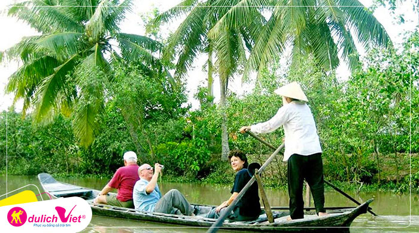

Du lịch Hè - Tour Du lịch Miền Tây - Mỹ Tho - Châu Đốc - Thiên Cấm Sơn từ Sài Gòn

Back
Du lịch Miền Tây - Mang vẻ đẹp đặc trưng của vùng đồng bằng sông nước Cửu Long, An Giang nổi tiếng bởi cảnh quan thiên nhiên nhuốm màu sắc huyền bí. Nằm trong dãy núi Thất Sơn, núi Cấm là ngọn núi cao nhất, nơi đây cảnh trí sơn thủy hữu tình, khí hậu mát mẻ được ví như một phiên bản “Đà Lạt” của miền Tây, là điểm đến lý tưởng du lịch sinh thái và tâm linh cho du khách hành hương cả nước. Hành trình sẽ là chuyến du hí đầy màu sắc dành cho du khách.